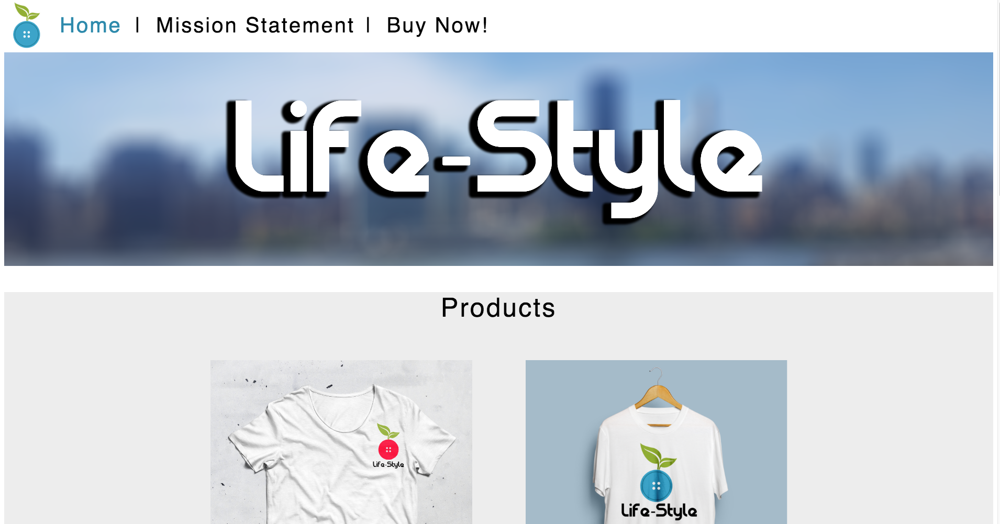
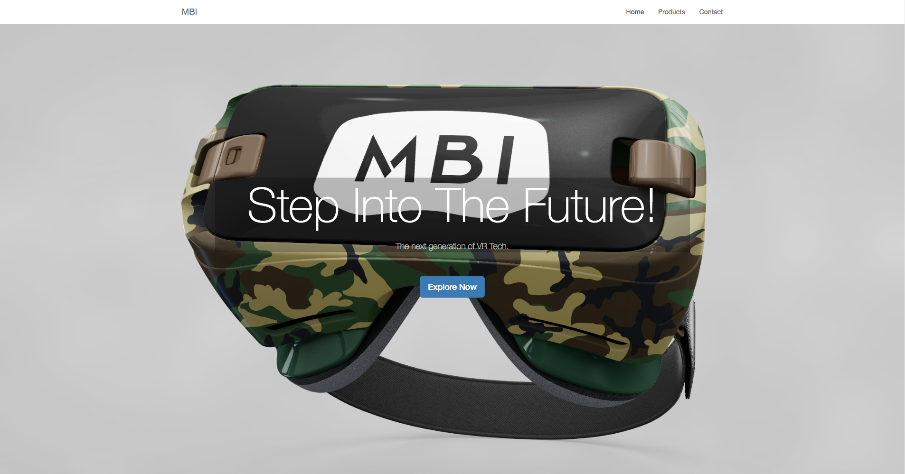

|  | We created a website for an online clothing brand named LifeStyle. We made 3 webpages within it, a home page, a buy now, and a mission statement page. On the homepage, we quickly introduced the company, created a banner for their company in Photoshop, and placed it on a parallax. On the buy now page, we created some clothing on Photoshop and put them on the webpage. On the mission statement page, we took photos of each member of the group and wrote a short blurb about each of them. |
|---|
|  | We created a website for a company named Majin Buu Industries. They wanted a website made for their full body haptic suit. We decided just to make it one giant page with all of the necessary content on it. From there, we created the images and logo on Photoshop and placed them on the page. We took inspiration from Oculus VR’s page as it is somewhat similar. After that, we wrote the content necessary on how the suit is made and how it works. |
|---|
We are the Scions. We develop kick ass products that combine state of the art technology and our first product is hitting the market soon.The scanner that we have created can easily scan and detect nutritional values of foods in seconds and give exact values.